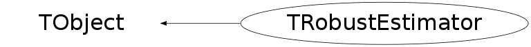

class TRobustEstimator: public TObject
TRobustEstimator Minimum Covariance Determinant Estimator - a Fast Algorithm invented by Peter J.Rousseeuw and Katrien Van Dreissen "A Fast Algorithm for the Minimum covariance Determinant Estimator" Technometrics, August 1999, Vol.41, NO.3 What are robust estimators? "An important property of an estimator is its robustness. An estimator is called robust if it is insensitive to measurements that deviate from the expected behaviour. There are 2 ways to treat such deviating measurements: one may either try to recongize them and then remove them from the data sample; or one may leave them in the sample, taking care that they do not influence the estimate unduly. In both cases robust estimators are needed...Robust procedures compensate for systematic errors as much as possible, and indicate any situation in which a danger of not being able to operate reliably is detected." R.Fruhwirth, M.Regler, R.K.Bock, H.Grote, D.Notz "Data Analysis Techniques for High-Energy Physics", 2nd edition What does this algorithm do? It computes a highly robust estimator of multivariate location and scatter. Then, it takes those estimates to compute robust distances of all the data vectors. Those with large robust distances are considered outliers. Robust distances can then be plotted for better visualization of the data. How does this algorithm do it? The MCD objective is to find h observations(out of n) whose classical covariance matrix has the lowest determinant. The MCD estimator of location is then the average of those h points and the MCD estimate of scatter is their covariance matrix. The minimum(and default) h = (n+nvariables+1)/2 so the algorithm is effective when less than (n+nvar+1)/2 variables are outliers. The algorithm also allows for exact fit situations - that is, when h or more observations lie on a hyperplane. Then the algorithm still yields the MCD location T and scatter matrix S, the latter being singular as it should be. From (T,S) the program then computes the equation of the hyperplane. How can this algorithm be used? In any case, when contamination of data is suspected, that might influence the classical estimates. Also, robust estimation of location and scatter is a tool to robustify other multivariate techniques such as, for example, principal-component analysis and discriminant analysis. Technical details of the algorithm: 0.The default h = (n+nvariables+1)/2, but the user may choose any interger h with (n+nvariables+1)/2<=h<=n. The program then reports the MCD's breakdown value (n-h+1)/n. If you are sure that the dataset contains less than 25% contamination which is usually the case, a good compromise between breakdown value and efficiency is obtained by putting h=[.75*n]. 1.If h=n,the MCD location estimate is the average of the whole dataset, and the MCD scatter estimate is its covariance matrix. Report this and stop 2.If nvariables=1 (univariate data), compute the MCD estimate by the exact algorithm of Rousseeuw and Leroy (1987, pp.171-172) in O(nlogn)time and stop 3.From here on, h<n and nvariables>=2. 3a.If n is small: - repeat (say) 500 times: -- construct an initial h-subset, starting from a random (nvar+1)-subset -- carry out 2 C-steps (described in the comments of CStep function) - for the 10 results with lowest det(S): -- carry out C-steps until convergence - report the solution (T, S) with the lowest det(S) 3b.If n is larger (say, n>600), then - construct up to 5 disjoint random subsets of size nsub (say, nsub=300) - inside each subset repeat 500/5 times: -- construct an initial subset of size hsub=[nsub*h/n] -- carry out 2 C-steps -- keep the best 10 results (Tsub, Ssub) - pool the subsets, yielding the merged set (say, of size nmerged=1500) - in the merged set, repeat for each of the 50 solutions (Tsub, Ssub) -- carry out 2 C-steps -- keep the 10 best results - in the full dataset, repeat for those best results: -- take several C-steps, using n and h -- report the best final result (T, S) 4.To obtain consistency when the data comes from a multivariate normal distribution, covariance matrix is multiplied by a correction factor 5.Robust distances for all elements, using the final (T, S) are calculated Then the very final mean and covariance estimates are calculated only for values, whose robust distances are less than a cutoff value (0.975 quantile of chi2 distribution with nvariables degrees of freedom)
Function Members (Methods)
public:
| TRobustEstimator() | |
| TRobustEstimator(const TRobustEstimator&) | |
| TRobustEstimator(Int_t nvectors, Int_t nvariables, Int_t hh = 0) | |
| virtual | ~TRobustEstimator() |
| void | TObject::AbstractMethod(const char* method) const |
| void | AddColumn(Double_t* col) |
| void | AddRow(Double_t* row) |
| virtual void | TObject::AppendPad(Option_t* option = "") |
| virtual void | TObject::Browse(TBrowser* b) |
| static TClass* | Class() |
| virtual const char* | TObject::ClassName() const |
| virtual void | TObject::Clear(Option_t* = "") |
| virtual TObject* | TObject::Clone(const char* newname = "") const |
| virtual Int_t | TObject::Compare(const TObject* obj) const |
| virtual void | TObject::Copy(TObject& object) const |
| virtual void | TObject::Delete(Option_t* option = "")MENU |
| virtual Int_t | TObject::DistancetoPrimitive(Int_t px, Int_t py) |
| virtual void | TObject::Draw(Option_t* option = "") |
| virtual void | TObject::DrawClass() constMENU |
| virtual TObject* | TObject::DrawClone(Option_t* option = "") constMENU |
| virtual void | TObject::Dump() constMENU |
| virtual void | TObject::Error(const char* method, const char* msgfmt) const |
| void | Evaluate() |
| void | EvaluateUni(Int_t nvectors, Double_t* data, Double_t& mean, Double_t& sigma, Int_t hh = 0) |
| virtual void | TObject::Execute(const char* method, const char* params, Int_t* error = 0) |
| virtual void | TObject::Execute(TMethod* method, TObjArray* params, Int_t* error = 0) |
| virtual void | TObject::ExecuteEvent(Int_t event, Int_t px, Int_t py) |
| virtual void | TObject::Fatal(const char* method, const char* msgfmt) const |
| virtual TObject* | TObject::FindObject(const char* name) const |
| virtual TObject* | TObject::FindObject(const TObject* obj) const |
| Int_t | GetBDPoint() |
| Double_t | GetChiQuant(Int_t i) const |
| const TMatrixDSym* | GetCorrelation() const |
| void | GetCorrelation(TMatrixDSym& matr) |
| const TMatrixDSym* | GetCovariance() const |
| void | GetCovariance(TMatrixDSym& matr) |
| virtual Option_t* | TObject::GetDrawOption() const |
| static Long_t | TObject::GetDtorOnly() |
| const TVectorD* | GetHyperplane() const |
| void | GetHyperplane(TVectorD& vec) |
| virtual const char* | TObject::GetIconName() const |
| const TVectorD* | GetMean() const |
| void | GetMean(TVectorD& means) |
| virtual const char* | TObject::GetName() const |
| Int_t | GetNHyp() |
| Int_t | GetNOut() |
| Int_t | GetNumberObservations() const |
| Int_t | GetNvar() const |
| virtual char* | TObject::GetObjectInfo(Int_t px, Int_t py) const |
| static Bool_t | TObject::GetObjectStat() |
| virtual Option_t* | TObject::GetOption() const |
| const TArrayI* | GetOuliers() const |
| const TVectorD* | GetRDistances() const |
| void | GetRDistances(TVectorD& rdist) |
| virtual const char* | TObject::GetTitle() const |
| virtual UInt_t | TObject::GetUniqueID() const |
| virtual Bool_t | TObject::HandleTimer(TTimer* timer) |
| virtual ULong_t | TObject::Hash() const |
| virtual void | TObject::Info(const char* method, const char* msgfmt) const |
| virtual Bool_t | TObject::InheritsFrom(const char* classname) const |
| virtual Bool_t | TObject::InheritsFrom(const TClass* cl) const |
| virtual void | TObject::Inspect() constMENU |
| void | TObject::InvertBit(UInt_t f) |
| virtual TClass* | IsA() const |
| virtual Bool_t | TObject::IsEqual(const TObject* obj) const |
| virtual Bool_t | TObject::IsFolder() const |
| Bool_t | TObject::IsOnHeap() const |
| virtual Bool_t | TObject::IsSortable() const |
| Bool_t | TObject::IsZombie() const |
| virtual void | TObject::ls(Option_t* option = "") const |
| void | TObject::MayNotUse(const char* method) const |
| virtual Bool_t | TObject::Notify() |
| void | TObject::Obsolete(const char* method, const char* asOfVers, const char* removedFromVers) const |
| static void | TObject::operator delete(void* ptr) |
| static void | TObject::operator delete(void* ptr, void* vp) |
| static void | TObject::operator delete[](void* ptr) |
| static void | TObject::operator delete[](void* ptr, void* vp) |
| void* | TObject::operator new(size_t sz) |
| void* | TObject::operator new(size_t sz, void* vp) |
| void* | TObject::operator new[](size_t sz) |
| void* | TObject::operator new[](size_t sz, void* vp) |
| TRobustEstimator& | operator=(const TRobustEstimator&) |
| virtual void | TObject::Paint(Option_t* option = "") |
| virtual void | TObject::Pop() |
| virtual void | TObject::Print(Option_t* option = "") const |
| virtual Int_t | TObject::Read(const char* name) |
| virtual void | TObject::RecursiveRemove(TObject* obj) |
| void | TObject::ResetBit(UInt_t f) |
| virtual void | TObject::SaveAs(const char* filename = "", Option_t* option = "") constMENU |
| virtual void | TObject::SavePrimitive(ostream& out, Option_t* option = "") |
| void | TObject::SetBit(UInt_t f) |
| void | TObject::SetBit(UInt_t f, Bool_t set) |
| virtual void | TObject::SetDrawOption(Option_t* option = "")MENU |
| static void | TObject::SetDtorOnly(void* obj) |
| static void | TObject::SetObjectStat(Bool_t stat) |
| virtual void | TObject::SetUniqueID(UInt_t uid) |
| virtual void | ShowMembers(TMemberInspector& insp) |
| virtual void | Streamer(TBuffer& b) |
| void | StreamerNVirtual(TBuffer& b) |
| virtual void | TObject::SysError(const char* method, const char* msgfmt) const |
| Bool_t | TObject::TestBit(UInt_t f) const |
| Int_t | TObject::TestBits(UInt_t f) const |
| virtual void | TObject::UseCurrentStyle() |
| virtual void | TObject::Warning(const char* method, const char* msgfmt) const |
| virtual Int_t | TObject::Write(const char* name = 0, Int_t option = 0, Int_t bufsize = 0) |
| virtual Int_t | TObject::Write(const char* name = 0, Int_t option = 0, Int_t bufsize = 0) const |
protected:
| void | AddToSscp(TMatrixD& sscp, TVectorD& vec) |
| void | Classic() |
| void | ClearSscp(TMatrixD& sscp) |
| void | Correl() |
| void | Covar(TMatrixD& sscp, TVectorD& m, TMatrixDSym& cov, TVectorD& sd, Int_t nvec) |
| void | CreateOrtSubset(TMatrixD& dat, Int_t* index, Int_t hmerged, Int_t nmerged, TMatrixD& sscp, Double_t* ndist) |
| void | CreateSubset(Int_t ntotal, Int_t htotal, Int_t p, Int_t* index, TMatrixD& data, TMatrixD& sscp, Double_t* ndist) |
| Double_t | CStep(Int_t ntotal, Int_t htotal, Int_t* index, TMatrixD& data, TMatrixD& sscp, Double_t* ndist) |
| virtual void | TObject::DoError(int level, const char* location, const char* fmt, va_list va) const |
| Int_t | Exact(Double_t* ndist) |
| Int_t | Exact2(TMatrixD& mstockbig, TMatrixD& cstockbig, TMatrixD& hyperplane, Double_t* deti, Int_t nbest, Int_t kgroup, TMatrixD& sscp, Double_t* ndist) |
| Double_t | KOrdStat(Int_t ntotal, Double_t* arr, Int_t k, Int_t* work) |
| void | TObject::MakeZombie() |
| Int_t | Partition(Int_t nmini, Int_t* indsubdat) |
| Int_t | RDist(TMatrixD& sscp) |
| void | RDraw(Int_t* subdat, Int_t ngroup, Int_t* indsubdat) |
Data Members
public:
| enum TObject::EStatusBits { | kCanDelete | |
| kMustCleanup | ||
| kObjInCanvas | ||
| kIsReferenced | ||
| kHasUUID | ||
| kCannotPick | ||
| kNoContextMenu | ||
| kInvalidObject | ||
| }; | ||
| enum TObject::[unnamed] { | kIsOnHeap | |
| kNotDeleted | ||
| kZombie | ||
| kBitMask | ||
| kSingleKey | ||
| kOverwrite | ||
| kWriteDelete | ||
| }; |
protected:
| TMatrixDSym | fCorrelation | correlation matrix |
| TMatrixDSym | fCovariance | covariance matrix estimate |
| TMatrixD | fData | the original data |
| Int_t | fExact | if there was an exact fit, stores the number of points on a hyperplane |
| Int_t | fH | algorithm parameter, determining the subsample size |
| TVectorD | fHyperplane | in case more than fH observations lie on a hyperplane |
| TMatrixDSym | fInvcovariance | inverse of the covariance matrix |
| TVectorD | fMean | location estimate (mean values) |
| Int_t | fN | number of observations |
| Int_t | fNvar | number of variables |
| TArrayI | fOut | array of indexes of ouliers, size <0.5*n |
| TVectorD | fRd | array of robust distances, size n |
| TVectorD | fSd | array of standard deviations |
| Int_t | fVarTemp | number of variables already added to the data matrix |
| Int_t | fVecTemp | number of observations already added to the data matrix |
Class Charts
{kind=link}
{kind=link}
{kind=link}
{kind=link}

Function documentation
TRobustEstimator()
this constructor should be used in a univariate case: first call this constructor, then - the EvaluateUni(..) function
void AddRow(Double_t* row)
adds a vector to the data matrix it is supposed that the vector is of size fNvar
void EvaluateUni(Int_t nvectors, Double_t* data, Double_t& mean, Double_t& sigma, Int_t hh = 0)
for the univariate case estimates of location and scatter are returned in mean and sigma parameters the algorithm works on the same principle as in multivariate case - it finds a subset of size hh with smallest sigma, and then returns mean and sigma of this subset
void Covar(TMatrixD& sscp, TVectorD& m, TMatrixDSym& cov, TVectorD& sd, Int_t nvec)
calculates mean and covariance
void CreateSubset(Int_t ntotal, Int_t htotal, Int_t p, Int_t* index, TMatrixD& data, TMatrixD& sscp, Double_t* ndist)
creates a subset of htotal elements from ntotal elements first, p+1 elements are drawn randomly(without repetitions) if their covariance matrix is singular, more elements are added one by one, until their covariance matrix becomes regular or it becomes clear that htotal observations lie on a hyperplane If covariance matrix determinant!=0, distances of all ntotal elements are calculated, using formula d_i=Sqrt((x_i-M)*S_inv*(x_i-M)), where M is mean and S_inv is the inverse of the covariance matrix htotal points with smallest distances are included in the returned subset.
void CreateOrtSubset(TMatrixD& dat, Int_t* index, Int_t hmerged, Int_t nmerged, TMatrixD& sscp, Double_t* ndist)
creates a subset of hmerged vectors with smallest orthogonal distances to the hyperplane hyp[1]*(x1-mean[1])+...+hyp[nvar]*(xnvar-mean[nvar])=0 This function is called in case when less than fH samples lie on a hyperplane.
Double_t CStep(Int_t ntotal, Int_t htotal, Int_t* index, TMatrixD& data, TMatrixD& sscp, Double_t* ndist)
from the input htotal-subset constructs another htotal subset with lower determinant As proven by Peter J.Rousseeuw and Katrien Van Driessen, if distances for all elements are calculated, using the formula:d_i=Sqrt((x_i-M)*S_inv*(x_i-M)), where M is the mean of the input htotal-subset, and S_inv - the inverse of its covariance matrix, then htotal elements with smallest distances will have covariance matrix with determinant less or equal to the determinant of the input subset covariance matrix. determinant for this htotal-subset with smallest distances is returned
Int_t Exact(Double_t* ndist)
for the exact fit situaions returns number of observations on the hyperplane
Int_t Exact2(TMatrixD& mstockbig, TMatrixD& cstockbig, TMatrixD& hyperplane, Double_t* deti, Int_t nbest, Int_t kgroup, TMatrixD& sscp, Double_t* ndist)
This function is called if determinant of the covariance matrix of a subset=0. If there are more then fH vectors on a hyperplane, returns this hyperplane and stops else stores the hyperplane coordinates in hyperplane matrix
Int_t Partition(Int_t nmini, Int_t* indsubdat)
divides the elements into approximately equal subgroups number of elements in each subgroup is stored in indsubdat number of subgroups is returned
Int_t RDist(TMatrixD& sscp)
Calculates robust distances.Then the samples with robust distances greater than a cutoff value (0.975 quantile of chi2 distribution with fNvar degrees of freedom, multiplied by a correction factor), are given weiht=0, and new, reweighted estimates of location and scatter are calculated The function returns the number of outliers.
void RDraw(Int_t* subdat, Int_t ngroup, Int_t* indsubdat)
Draws ngroup nonoverlapping subdatasets out of a dataset of size n such that the selected case numbers are uniformly distributed from 1 to n
Double_t KOrdStat(Int_t ntotal, Double_t* arr, Int_t k, Int_t* work)
because I need an Int_t work array
void GetCovariance(TMatrixDSym& matr)
void GetCorrelation(TMatrixDSym& matr)
void GetRDistances(TVectorD& rdist)